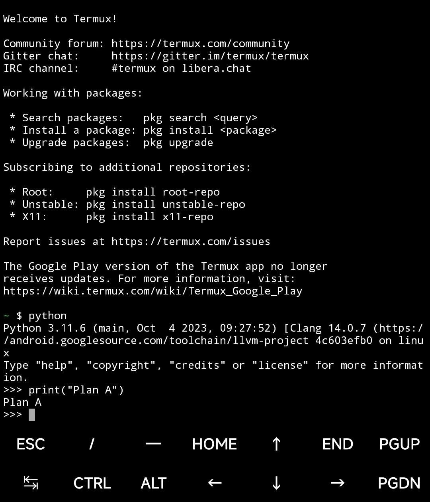
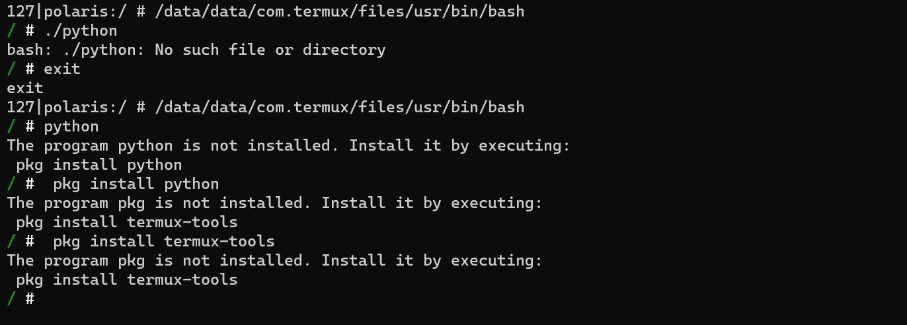
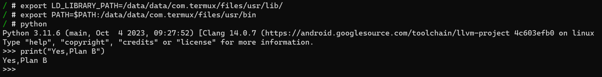
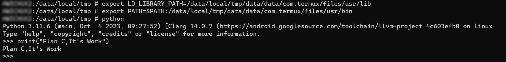
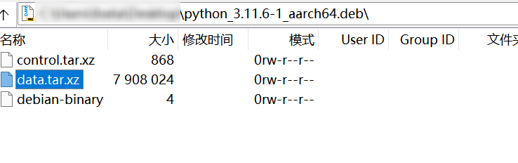
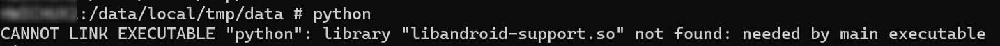
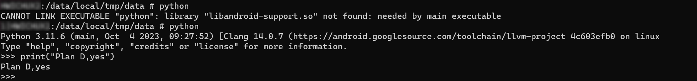
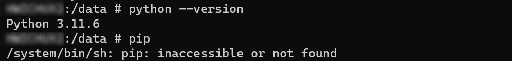
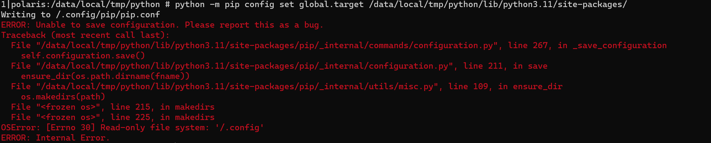
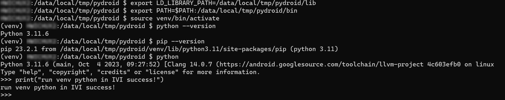

车联网安全进阶之Trick——Android车机运行Python
车联网安全进阶之Trick——Android车机运行Python
在整车环境下，网络隔离划分出了多个网络。多数的 ECU(注，本文中的 ECU 特指支持 TCP/IP 协议栈的 ECU) 不能够与测试机直连，虽然通过内网穿透技术可以实现访问这些隔离的 ECU。在内网穿透环境下测试由于转发问题会出现异常连接的情况。例如，使用 Python 的 Scapy 模块编写 SOMEIP 脚本时无法建立连接。
Python 脚本比较灵活，支持的模块也比较多，但 Python 上车确实是个问题。智驾上往往原生支持Python，但通常作为测试入口的车机，Python 却不支持的。最近在漏洞挖掘中，在车机上对 Python 有迫切的需求，于是就又双叒叕去搜索了一下 Android 上运行Python的方法，所有的方案指向—— Python IDE APP。那就得安装一个 APP，但当下新出的车机有的加了系统签名验证导致第三方应用无法安装。那先试试安装APP这个方案。
方案①：安装 Python IDE APP
Qpython、Pydroid 是Android上用的比较多的编辑器/IDE。在能够安装第三方APP的车机上，使用 adb 安装上应用。然后使用就比较尴尬了，图形化界面在测试中是个弊端，把车机屏幕当成显示屏，外接键盘来测试？有的车机也不是识别键盘呀！
突然想起我手机上的 Termux 也是可以安装 Python。但是 Termux 也是图形的，也不是图形化——主界面是命令行。怎么通过ADB 使用纯命令行的 Termux 呢，尝试第二种方案——ADB中使用Termux。
Termux是一款基于Android系统的终端模拟器应用程序,可以在Android设备上运行命令行界面和Linux软件包。它提供了一个完整的Linux环境,包括常用的命令行工具、编程语言和软件包管理器等。

方案②：ADB中使用Termux
首先看看 Termux 用的 SHELL 是哪个，直接查看环境，SHELL 的路径是 /data/data/com.termux/files/usr/bin/bash
1 | ~ $ echo $SHELL |
先拿手机试试，进入ADB SHELL 切换到 Termux 的SHELL。好消息，命令行的Termux进去了；坏消息，Python运行不了。

其实，已经装了 Python，运行不了的原因是缺少环境变量。缺啥补啥，这就去加个环境变量。添加环境变量 PATH 就能直接使用 python等命令了，指定依赖库的位置 LD_LIBRARY_PATH 也不可或缺。
1 | export LD_LIBRARY_PATH=/data/data/com.termux/files/usr/lib/ |
环境变量设置好了，果然进来了。

那么问题来了，虽然能用Python，但这辆车上不能安装第三方应用。那摆在眼前的是怎么在不安装 APK 的情况下使用Termux。都到这里了，证明ADB运行Python是可行的，那么继续下一步——迁移Termux。
方案③： 迁移Termux
查看 Termux 安装后的文件结构发现，/data/data/com.termux/files/usr/ 下不就是 POSIX 的文件系统结构么。
1 | .../data/com.termux $ tree -L 3 |
车机的架构和手机架构一样，直接打包复制到车机上。
说干就干，复制到 /data/local/tmp/ 下，设置好环境变量。
1 | export LD_LIBRARY_PATH=/data/local/tmp/data/data/com.termux/files/usr/lib |
Python 启动！

能用就是包有点大 700M，想想感觉可以精简。
方案④：独立的 Python
手机是AARCH64，车机也是AARCH64, 那么 Termux 的Python软件包是不是能直接使用。 直接去 Termux 的包管理网站下载 python_3.11.6-1_aarch64.deb。
deb 中有三个文件，其中 data.tar.gz 是主要的程序文件。

data.tar.gz 放到车机里面却发现报错，缺少依赖环境。

缺啥补啥，从Termux lib 中抠出来，有点未免太费劲了。都到这里了，还是尝试添加一下依赖吧。把 libandroid-support.so 上传到 /data/local/tmp/data/data/com.termux/files/usr/lib 竟然成了，不是连环的缺少依赖。

又试了试 pip，包里面没有 pip。

补充了 pip，也能安装模块，但是不能使用，因为配置的 lib 路径的文件，必须和 termux 的文件结构一致才行。但独立出来，路径是固然要改的。于是想到修改pip下载模块的默认存储路径。配置需要写入配置文件到根目录，然而大部分车机的根目录是不可写的。

继续修复Bug，那还不如直接用方案三中的直接复制过来Termux环境。老老实实用Termux的环境，占用的磁盘空间大就大点吧！
对了，还有一种方案就是使用虚拟环境 venv，直接使用 python -m venv venv 不出意料也报错，修复报错后，就大功告成了。打包好放在 https://github.com/delikely/Automotive-Security-Toolkit/tree/main/pydroid，各位看官自取。

方案⑤：静态编译Python
话又说回来，不同的车机可能缺少的依赖不同，那存不存在静态编译的Python呢？这可能是最佳的方案，静态编译的 Python 和 pip，就像静态编译的 busybox 一样，没有依赖问题直接用。但是找了一圈又一圈，现成的压根没有，有没有愿意尝试静态编译 Python 的勇士呢？